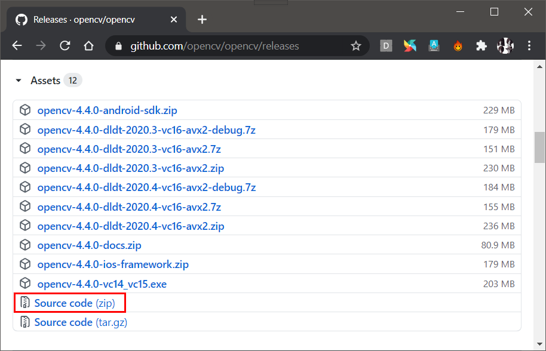

【小白用】在Ubuntu上安装OpenCV任何版本+Contrib库+CUDA兼容
各位小伙伴们好。时隔上次更新已经很久了呀。看了看我之前的OpenCV安装教程视频总感觉不是很完整，评论区也有人问contrib如何安。这次更新是*尝试*使得更完善吧。嘛，本人现在并不在国内，不知道小伙伴们会不会遇到被墙的问题呢（如有通报我）。0.介绍
这里先很简短的介绍。NVidia CUDA，cuDNN 与 OpenCV
CUDA是Nvidia创建的并行计算平台和应用程序编程接口模型。它允许软件开发人员和软件工程师使用支持CUDA的图形处理单元进行通用处理。简单来说，CUDA就是一个配合NVidia GPU的一个驱动，使如深度学习应用上能达到加速作用。
在OpenCV上CUDA库能使处理速度更快，特别是使用dnn模块。dnn模块提供了深度学习神经网络的接口，使OpenCV能使用神经网络。其中提供如caffe，tensorflow甚至是darknet YOLO的接口 例子
OpenCV Contrib库
OpenCV Contrib库是非官方的第三方开发扩充库。通过这个库，我们能使用如dnn、相机标注、3D成像、ArUco、物体追踪，甚至是需付费的SURF、SIFT特征点提取算法。1.准备
这里是本文默认的：1. 使用Ubuntu（这里使用16.04，其他版本操作其实差别不大）.
2. 计算机拥有NVidia CUDA GPU.
3. 已安装对应版本的CUDA和cuDNN.
解决无法从github下载问题
由于国内网络限制，有时会碰到GitHub资源下载超时问题。对策是在host文件添加一行语句。打开终端，
sudo gedit /etc/hosts以上命令使用gedit打开了host文件。
在host文件的最后添加一行:
151.101.76.133 github-com.s3.amazonaws.com希望这一步能解决接下来的下载问题。
Apt-get安装下载缓慢
如果使用Ubuntu默认的下载源可能比较慢，建议在设置内切换到清华源或是中科院源。搜索software & updates
1.选择国内源，2.关闭。关闭后会自动有一系列的更新，稍等。
2.安装
安装依赖包裹
首先先安装一切有必要的包裹：sudo apt-get update sudo apt-get upgrade sudo apt-get install build-essential cmake unzip pkg-config sudo apt-get install libjpeg-dev libpng-dev libtiff-dev sudo apt-get install libavcodec-dev libavformat-dev libswscale-dev sudo apt-get install libv4l-dev libxvidcore-dev libx264-dev sudo apt-get install libgtk-3-dev sudo apt-get install libatlas-base-dev gfortran sudo apt-get install python3-dev
下载OpenCV源代码
接下来我们下载OpenCV的源代码。这是因为如果要配置CUDA支持，OpenCV并没有提供现成直接安装的包裹（C++版也是如此，不像Python的能直接pip install），我们必须先下载源代码，然后cmake编译后安装。1. 进入OpenCV Github Release网页：https://github.com/opencv/opencv/releases
2. 选择你想要的版本，我选择了最新的4.4.0.
3. 右键复制链接。

4. 接下来轮到OpenCV-contrib：https://github.com/opencv/opencv_contrib/releases
5. 选择一样版本的contrib（不一样版本后果自负哈）
6. 右键复制链接 7. 在home下打开终端。加上从上面拿到的两个链接，通过以下命令，我们能下载OpenCV的源代码并解压:
cd ~ wget -O opencv.zip https://github.com/opencv/opencv/archive/[你的版本号].zip wget -O opencv_contrib.zip https://github.com/opencv/opencv_contrib/archive/[你的版本号].zip unzip opencv.zip unzip opencv_contrib.zip mv opencv-[你的版本号] opencv mv opencv_contrib-[你的版本号] opencv_contrib
[可选] 搭建Python环境
如果你也想在Python下使用OpenCV，可以按照下列指示。我们会在这一步安装python与搭建virtualenv虚拟环境。1. 安装pip
wget https://bootstrap.pypa.io/get-pip.py sudo python3 get-pip.py2. 安装virtualenv和virtualenvwrapper
sudo pip install virtualenv virtualenvwrapper sudo rm -rf ~/get-pip.py ~/.cache/pip3. 打开Ubuntu的~/.bashrc文件，添加virtualenv和virtualenvwrapper相关bash终端变量。 我们可以使用以下命令使用gedit打开并编辑~/.bashrc文件：
gedit ~/.bashrc在打开的文件最后，添加以下段落：
# virtualenv and virtualenvwrapper export WORKON_HOME=$HOME/.virtualenvs export VIRTUALENVWRAPPER_PYTHON=/usr/bin/python3 source /usr/local/bin/virtualenvwrapper.sh保存并退出gedit.
4. 创建virtualenv虚拟环境
mkvirtualenv [自己取一个环境名] -p python3例子：
mkvirtualenv opencv_cuda -p python35. 安装numpy.
pip3 install numpynumpy是其中一个在Python写程序时非常常用的库之一，主要供应Python对array的运算。 6. 每次要使用你刚创建的虚拟环境，在终端输入以下命令即可：
workon [环境名]
确定自己GPU的框架版本(architecture version)
从这里我们可以得到自己GPU的框架版本。
寻找自己的GPU型号，Compute Capability就是所谓的框架版本。
配置并编译OpenCV
如果你在之前的部分创立了新的虚拟环境，切换到你的虚拟环境中：workon [环境名]创建build文件夹，然后使用CMake编译：
cd ~/opencv mkdir build cd buildCMake编译命令。注意必须更改CUDA_ARCH_BIN项，为GPU的框架版本。
cmake -D CMAKE_BUILD_TYPE=RELEASE \ -D CMAKE_INSTALL_PREFIX=/usr/local \ -D INSTALL_PYTHON_EXAMPLES=ON \ -D INSTALL_C_EXAMPLES=OFF \ -D OPENCV_ENABLE_NONFREE=ON \ -D WITH_CUDA=ON \ -D WITH_CUDNN=ON \ -D OPENCV_DNN_CUDA=ON \ -D ENABLE_FAST_MATH=1 \ -D CUDA_FAST_MATH=1 \ -D CUDA_ARCH_BIN=7.5 \ -D WITH_CUBLAS=1 \ -D OPENCV_EXTRA_MODULES_PATH=~/opencv_contrib/modules \ -D HAVE_opencv_python3=ON \ -D PYTHON_EXECUTABLE=~/.virtualenvs/opencv_cuda/bin/python \ -D BUILD_EXAMPLES=ON ..如果没有添加Python支持的，可以删除最后第二和第三行，即：
cmake -D CMAKE_BUILD_TYPE=RELEASE \ -D CMAKE_INSTALL_PREFIX=/usr/local \ -D INSTALL_PYTHON_EXAMPLES=ON \ -D INSTALL_C_EXAMPLES=OFF \ -D OPENCV_ENABLE_NONFREE=ON \ -D WITH_CUDA=ON \ -D WITH_CUDNN=ON \ -D OPENCV_DNN_CUDA=ON \ -D ENABLE_FAST_MATH=1 \ -D CUDA_FAST_MATH=1 \ -D CUDA_ARCH_BIN=7.5 \ -D WITH_CUBLAS=1 \ -D OPENCV_EXTRA_MODULES_PATH=~/opencv_contrib/modules \ -D BUILD_EXAMPLES=ON ..从上，WITH_CUDA和WITH_CUDNN项指的是用CUDA和cuDNN。OPENCV_DNN_CUDA项表示我们要编译后的dnn模块支持CUDA。ENABLE_FAST_MATH, CUDA_FAST_MATH和WITH_CUBLAS项是为了优化运算而开启的。
CUDA_ARCH_BIN项的GPU框架版本号很重要，因为如果这个值填错，使用dnn模块时可能会出现以下问题：
cv2.error: OpenCV(4.2.0) /home/waltpeter/opencv/modules/dnn/src/cuda/execution.hpp:52: error: (-217:Gpu API call) invalid device function in function 'make_policy'
CMake出现下载错误
然后，编译：
Bug1: xfeatures2d/boostdesc boostdesc_bgm_hd.i 无法下载问题
仔细查看CMake的输出。你可能看到*类似*以下的报错：CMake Warning at cmake/OpenCVDownload.cmake:188 (message): xfeatures2d/boostdesc: Download failed: 1;"Unsupported protocol" For details please refer to the download log file: /root/opencv/build/CMakeDownloadLog.txt Call Stack (most recent call first): opencv_contrib/modules/xfeatures2d/cmake/download_boostdesc.cmake:22 (ocv_download) opencv_contrib/modules/xfeatures2d/CMakeLists.txt:8 (download_boost_descriptors) -- xfeatures2d/boostdesc: Download: boostdesc_bgm_bi.i CMake Warning at cmake/OpenCVDownload.cmake:188 (message): xfeatures2d/boostdesc: Download failed: 1;"Unsupported protocol" For details please refer to the download log file: /root/opencv/build/CMakeDownloadLog.txt Call Stack (most recent call first): opencv_contrib/modules/xfeatures2d/cmake/download_boostdesc.cmake:22 (ocv_download) opencv_contrib/modules/xfeatures2d/CMakeLists.txt:8 (download_boost_descriptors) -- xfeatures2d/boostdesc: Download: boostdesc_bgm_hd.i CMake Warning at cmake/OpenCVDownload.cmake:188 (message): xfeatures2d/boostdesc: Download failed: 1;"Unsupported protocol"
Bug2: ippicv_linux_* 下载失败
你也可能看到*类似*这个报错：-- ICV: Downloading ippicv_linux_20151201.tgz... CMake Error at 3rdparty/ippicv/downloader.cmake:73 (file): file DOWNLOAD HASH mismatch
make -j8记得取代'8'为你的CPU内核数。
make时如果你看到以下报错：
$ make make: * No targets specified and no makefile found. Stop.这是因为上面CMake时并不成功，请检查CMake时的输出。
安装OpenCV
编译成功后我们就可安装：sudo make install sudo ldconfig
sudo gedit /etc/ld.so.conf.d/opencv.conf执行此命令后打开的可能是一个空白的文件，不用管，只需要在文件末尾添加:
/usr/local/lib
sudo ldconfig使得刚才的配置路径生效
sudo gedit /etc/bash.bashrc在末尾加上：
PKG_CONFIG_PATH=$PKG_CONFIG_PATH:/usr/local/lib/pkgconfig export PKG_CONFIG_PATH使得配置生效
source /etc/bash.bashrc sudo updatedb
3.测试OpenCV安装
1. 创建新文件夹，我命名为OpenCV-Test2. 进入文件夹后右键打开终端
3. touch main.cpp 创建名为main.cpp的文件
4. 右键main.cpp，使用IDE打开
5. 复制代码：
#include <opencv2/opencv.hpp>
#include <iostream>
using namespace cv;
using namespace std;
int main(int argc, char** argv)
{
//读取照片
Mat image = imread("OpenCV_Logo.png");
//检测失误
if (image.empty())
{
cout << "Could not open or find the image" << endl;
cin.get(); //等待键盘输入
return -1;
}
String windowName = "OpenCV Test"; //窗口名称
namedWindow(windowName); //创建新窗口
imshow(windowName, image); //使用新窗口显示照片
waitKey(0); //等待键盘输入
destroyWindow(windowName); //关闭所有窗口
return 0;
}
6. 网上随意下载张图片，放入与main.cpp相同的文件夹中。7. 更改图片路径。
8. g++编译
g++ -o main main.cpp `pkg-config --libs --cflags opencv`9. 运行程序
./main10. 没有报错就是安装成功了
[可选] Python下测试
$ workon opencv_cuda $ python Python 3.5.3 (default, Jun 27 2020, 17:25:39) [GCC 6.3.0 20170516] on linux Type "help", "copyright", "credits" or "license" for more information. <<< import cv2 <<< cv2.__version__ '4.2.0' <<<切换到你的虚拟环境中（我的是opencv_cuda）。在输入"python"命令，打开了python的交流模式。在python下import cv2，也就是导入opencv库，然后cv2.__version__质询opencv版本。